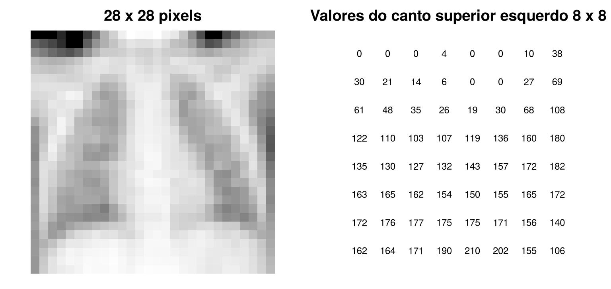
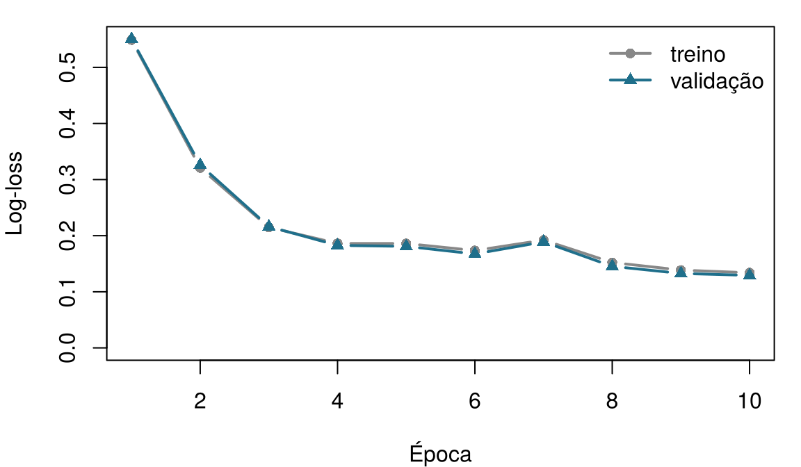

7 Redes neurais e aprendizado profundo
Um neurônio artificial é inspirado, de forma livre, em uma célula nervosa. Associe cada parte de um neurônio biológico à peça do neurônio artificial que desempenha um papel parecido. Arrisque um palpite: o capítulo explica cada uma delas.
| Parte da célula nervosa | Equivalente no neurônio artificial |
|---|---|
| Dendritos, que recebem sinais de outras células | |
| A força de cada sinapse | |
| O corpo celular (soma), que soma os sinais excitatórios e inibitórios | |
| O segmento inicial do axônio, que dispara apenas acima de um limiar | |
| Os terminais do axônio, que transmitem o sinal adiante |
Como usar este capítulo
Este capítulo aproveita algumas ideias dos anteriores:
- Um modelo é uma representação simplificada da realidade, \(y = f(\mathbf{x}) + \varepsilon\), e aprender significa estimar \(f\) a partir dos dados (Definição 1.3). Cada linha de um conjunto de dados é uma instância, com atributos \(\mathbf{x}_i\) e um desfecho \(y_i\) (Definição 1.7).
- Os modelos são ajustados em um conjunto de treino e avaliados em um conjunto de teste que nunca viram (Seção 1.8); um modelo flexível demais sofre sobreajuste (Definição 1.8). As escolhas feitas durante o treinamento usam um conjunto de validação separado (Capítulo 3).
- Uma função de perda \(\mathcal{L}\) mede o quanto as predições de um modelo estão erradas (Capítulo 3).
- A regressão logística transforma uma soma ponderada em uma probabilidade com a função logística (sigmoide) \(\sigma(z) = 1/(1+e^{-z})\). Os erros de um classificador são resumidos em uma matriz de confusão, da qual vêm a sensibilidade (a proporção de doentes que ele sinaliza) e a especificidade (a proporção de pessoas saudáveis que ele libera); um limiar \(t\) transforma uma probabilidade em uma decisão (Capítulo 5).
- A taxa de aprendizado \(\eta\) controla o tamanho do passo que um algoritmo de aprendizado dá (Capítulo 6, boosting).
| Exemplo | Quem ou o quê | Desfecho | Rostos que você vai conhecer |
|---|---|---|---|
| 1 UTI Ala 7 | 1.250 pacientes de UTI em 4 hospitais | variação da creatinina em 48 h (lesão renal aguda se ≥ 0,3 mg/dL) | Aoife (71 anos, sepse, risco limítrofe), Tomás (54 anos, risco baixo), Priya (38 anos, risco alto); a Dra. Emma Walsh; Seán, o farmacêutico |
| 2 Ensaio ONCO-1 | 1.000 pacientes randomizados para quimioterapia ou não | redução do tumor (%) | pacientes #0042 e #0917 |
| 3 HomeBeat | 500 pessoas que usam um relógio inteligente em casa | escore de estresse, evento de deterioração | Lena |
| 4 CellWorks | 420 lotes de produção de uma terapia celular | escore de potência | lote CW-118 |
Os quatro conjuntos de dados são simulados e podem ser baixados no apêndice de dados. A apresentação completa está na Seção 1.1.
Este capítulo também usa imagens reais: radiografias de tórax pediátricas da coleção pública PneumoniaMNIST, descrita no apêndice de dados.
Este capítulo vai de uma única célula nervosa a uma rede que lê radiografias de tórax. Ele tem doze seções e um Lab, sete verificações rápidas, três widgets “Experimente”, um desafio e três missões de programação em R e Python. Reserve cerca de duas horas. Nada pesado roda no seu navegador: a rede convolucional foi treinada uma única vez, e os resultados dela são carregados de arquivos.
| Símbolo | Significado | Seção |
|---|---|---|
| \(x_1, \dots, x_p\); \(\mathbf{x}\) | entradas de um neurônio (os atributos) | Seção 7.2 |
| \(w_1, \dots, w_p\); \(\mathbf{w}\) | pesos de um neurônio | Seção 7.2 |
| \(b\) | viés de um neurônio | Seção 7.2 |
| \(z = \mathbf{w}^{\top}\mathbf{x} + b\) | soma ponderada (pré-ativação) | Seção 7.2 |
| \(g(\cdot)\) | função de ativação | Seção 7.2 |
| \(\sigma(z)\) | função logística (sigmoide) | Seção 7.2 |
| \(\mathcal{L}\) | função de perda | Seção 7.3 |
| \(\eta\) | taxa de aprendizado | Seção 7.3 |
| \(\mathbf{W}^{(l)}\), \(\mathbf{b}^{(l)}\) | matriz de pesos e vetor de vieses da camada \(l\) | Seção 7.4 |
| \(\mathbf{h}^{(l)}\) | representação oculta (saída) da camada \(l\) | Seção 7.4 |
A lista completa está na página de notação. Os pesos das redes neurais são escritos \(w\) e \(\mathbf{W}\); os coeficientes dos modelos estatísticos mantêm a letra \(\beta\).
7.1 Do cérebro aos neurônios artificiais
As redes neurais artificiais nasceram como uma tentativa de capturar, em uma forma matemática muito simplificada, o modo como as células nervosas calculam. Essa ideia às vezes é chamada de neuromorfismo: representar a computação com unidades vagamente inspiradas no cérebro, em que “neurônios” recebem sinais, combinam esses sinais e transmitem uma resposta, e “sinapses” decidem com que intensidade cada sinal conta. O objetivo nunca foi copiar a biologia com fidelidade (os sistemas biológicos são complexos demais para isso), mas tomar emprestada a capacidade dela de detectar padrões, integrar evidências e generalizar (Mead 1990).
Os neurônios foram descritos em detalhe pela primeira vez pelo histologista espanhol Santiago Ramón y Cajal, cujos desenhos mostraram que o sistema nervoso é formado por células separadas, ligadas em pontos de contato, e que é considerado um dos fundadores da neurociência moderna (Ramón y Cajal 1909). Embora existam muitos tipos de neurônio, um neurônio “canônico” tem as partes esboçadas na Figura 7.1.

- Dendritos, a árvore de entrada. Projeções ramificadas que recebem sinais. Um neurônio costuma receber milhares de entradas sinápticas nos dendritos e no corpo celular. Elas chegam como potenciais pós-sinápticos excitatórios, que elevam a voltagem da membrana, e inibitórios, que a reduzem.
- Sinapses, as conexões ponderadas. Cada ponto de contato entre dois neurônios é uma sinapse. As sinapses diferem em força, e essa força muda com o uso. Essa plasticidade é a base biológica da aprendizagem e da memória.
- O soma, o integrador. O corpo celular soma os potenciais excitatórios e inibitórios que chegam: na prática, uma soma ponderada biofísica, moldada pelas propriedades elétricas da membrana e pela forma dos dendritos.
- O segmento inicial do axônio, o ponto de decisão. Na base do axônio, canais de sódio dependentes de voltagem, densamente agrupados, decidem se o neurônio dispara. Se o potencial de membrana somado ultrapassa um limiar (tipicamente em torno de −55 mV), começa uma despolarização rápida: o potencial de ação, ou disparo.
- O axônio e seus terminais, o cabo de saída. O disparo percorre o axônio, muitas vezes isolado por mielina, que acelera a condução. Nos terminais, ele libera neurotransmissores que influenciam as células seguintes.
Em resumo, uma célula nervosa recebe muitos sinais, pondera e soma esses sinais, dispara se a soma ultrapassa um limiar e transmite o resultado adiante (Kandel et al. 2021). Guarde esses quatro verbos: o neurônio artificial mantém exatamente esses e descarta quase todo o resto.
7.2 O neurônio artificial
Em 1943, Warren McCulloch e Walter Pitts propuseram um neurônio matemático que soma entradas binárias e dispara quando a soma ultrapassa um limiar (McCulloch e Pitts 1943). Em 1958, Frank Rosenblatt acrescentou o que faltava: pesos aprendidos a partir de exemplos. Ele chamou sua máquina de perceptron (Rosenblatt 1958).
Definição 7.1 (Neurônio artificial (perceptron)) Um neurônio artificial recebe entradas numéricas \(x_1, \dots, x_p\), multiplica cada uma por um peso \(w_j\), acrescenta um viés (bias) \(b\) e passa a soma ponderada \[ z = w_1 x_1 + w_2 x_2 + \cdots + w_p x_p + b = \mathbf{w}^{\top}\mathbf{x} + b \qquad(7.1)\] por uma função de ativação \(g\), obtendo sua saída \(\hat y = g(z)\). Os pesos e o viés são os parâmetros do neurônio: eles são aprendidos a partir dos dados. O perceptron original de Rosenblatt usava uma ativação em degrau.
Os pesos dizem o quanto cada entrada importa, e em que direção: um peso positivo grande empurra a saída para cima, um negativo a empurra para baixo, e um peso próximo de zero significa que a entrada é ignorada. O viés desloca o ponto em que o neurônio “dispara”, quaisquer que sejam as entradas; ele desempenha um papel vagamente parecido com o do limiar de disparo de uma célula nervosa.
Definição 7.2 (Função de ativação) Uma função de ativação \(g\) transforma a soma ponderada \(z\) na saída do neurônio. As escolhas mais comuns são a função degrau, \(g(z) = 1\) se \(z \ge 0\) e \(0\) caso contrário (o perceptron de Rosenblatt); a função logística (sigmoide), \(g(z) = \sigma(z) = 1/(1+e^{-z})\), que fornece um número entre 0 e 1; e a unidade linear retificada (ReLU), \(g(z) = \max(0, z)\), que deixa passar os valores positivos sem alteração, zera os negativos e é o padrão dentro das redes modernas (Nair e Hinton 2010).
A Figura 7.2 mostra um neurônio com três entradas.
A Figura 7.3 sobrepõe a imagem biológica à artificial: as entradas chegam pelos “dendritos”, a soma ponderada é o “soma”, a ativação faz o papel do axônio que decide se dispara, e a saída deixa o neurônio pelo “terminal do axônio”.

A analogia ajuda a lembrar as partes, mas é livre. Os neurônios reais se comunicam por disparos cujo momento carrega informação; seus dendritos fazem cálculos locais, e não apenas somas; neuromoduladores como a dopamina mudam a resposta de circuitos inteiros; e as sinapses mudam segundo regras biológicas que não se parecem em nada com o algoritmo que treina as redes artificiais. Um neurônio artificial é uma soma ponderada seguida de uma função simples. Seu poder vem de conectar muitos deles e de aprender os pesos, não de se parecer com um cérebro.
Um colega diz: “As redes neurais funcionam tão bem porque copiam o funcionamento do cérebro.” Qual é a melhor resposta?
7.2.1 Um neurônio com sigmoide é uma regressão logística
Escolha a sigmoide como ativação e olhe de novo para a Equação 7.1: \[ \hat y = \sigma(w_1 x_1 + \cdots + w_p x_p + b) = \frac{1}{1 + e^{-(\mathbf{w}^{\top}\mathbf{x} + b)}} . \] Esse é exatamente o modelo de regressão logística do Capítulo 5, \(P(y = 1 \mid \mathbf{x}) = \sigma(\beta_0 + \beta_1 x_1 + \cdots + \beta_p x_p)\), com os pesos fazendo o papel dos coeficientes (\(w_j = \beta_j\)) e o viés o papel do intercepto (\(b = \beta_0\)). A soma ponderada \(z\) é o log-odds (o logaritmo da chance), e a saída é uma probabilidade. Um único neurônio sigmoide é uma regressão logística: tudo o que você aprendeu sobre ler razões de chances, escolher limiares e verificar a calibração vale para ele.
Pense em Aoife Byrne, 71 anos, internada na UTI Ala 7 com sepse, cujo risco de lesão renal aguda (LRA) a equipe ponderou no Capítulo 1. A regressão logística principal do Capítulo 5 prevê a LRA (um aumento da creatinina de pelo menos 0,3 mg/dL em 48 horas (Kidney Disease: Improving Global Outcomes (KDIGO) Acute Kidney Injury Work Group 2012)) a partir de cinco atributos da admissão e foi ajustada aos 1.000 pacientes de treino da divisão compartilhada. O seu intercepto é −1,1705 e os seus coeficientes são 0,4031 por ponto de SOFA (Vincent et al. 1996), 0,2968 por mmol/L de lactato, −0,0358 por mmHg da menor pressão arterial média, 2,3413 por mg/dL de creatinina basal e −2,6425 por unidade de adesão ao protocolo (uma proporção de 0 a 1). Lidos como um neurônio, são cinco pesos \(w_1, \dots, w_5\) e um viés \(b\). Aoife tem SOFA 6, lactato de 2,1 mmol/L, menor PAM de 66 mmHg, creatinina basal de 1,0 mg/dL e adesão ao protocolo de 0,72. Calcule você mesmo a saída do neurônio dela.
O neurônio de Aoife. A soma ponderada z já está calculada. Preencha a lacuna com a ativação sigmoide, para que p seja a probabilidade estimada de LRA de Aoife.
A sigmoide de z é 1 / (1 + exp(-z)).
p <- 1 / (1 + exp(-z))A sigmoide de z é 1 / (1 + np.exp(-z)).
p = 1 / (1 + np.exp(-z))A saída do neurônio, 0,486, é o risco de Aoife no Capítulo 5 (0,49), porque o neurônio é aquele modelo: mesmas entradas, mesmos pesos, mesma sigmoide.
Geometricamente, um neurônio traça uma fronteira reta. Os pontos em que \(z = 0\) (onde a saída da sigmoide é exatamente 0,5) satisfazem \(\mathbf{w}^{\top}\mathbf{x} + b = 0\), que é uma reta em duas dimensões, um plano em três e um hiperplano em mais dimensões. Todo paciente de um lado recebe uma probabilidade acima de 0,5, todo paciente do outro lado, abaixo. Experimente.
Playground do perceptron. Cada ponto é um dos 1.250 pacientes da UTI Ala 7, colorido conforme a ocorrência de LRA. Para caber na tela, este neurônio tem só duas entradas, SOFA e lactato (um modelo didático, não o modelo de cinco atributos acima). Os dois atributos estão padronizados (0 = o paciente médio, 1 = um desvio-padrão acima dele). Mova os pesos e o viés: o sombreado é a saída do neurônio, e a linha preta é a sua fronteira \(z = 0\). A log-loss mede o quanto as probabilidades estão erradas (quanto menor, melhor; chutar 0,5 para todos dá 0,693). Meta: nos dados da UTI Ala 7, com a sigmoide, deixar a log-loss abaixo de 0,57. Depois mude para o segundo conjunto de dados, em que o risco depende de uma combinação dos dois atributos, e tente encontrar qualquer reta que funcione.
Cruzes laranja: houve LRA (ou o evento); círculos cinza: não houve.
Na UTI Ala 7, uma fronteira reta faz um trabalho razoável: SOFA mais alto e lactato mais alto empurram o risco para cima, e a melhor reta equilibra os dois. No segundo conjunto de dados, nenhuma reta se sai melhor do que chutar: com a sigmoide, a log-loss nunca fica abaixo de cerca de 0,69, o valor de responder 0,5 para todos, quaisquer que sejam os pesos escolhidos. (Uma reta pode isolar um canto e acertar cerca de dois terços dos pacientes, mas o padrão verdadeiro acertaria 0,89.) O padrão ali é uma interação: o risco é alto quando ambos os atributos são altos ou ambos são baixos. Em 1969, Marvin Minsky e Seymour Papert mostraram formalmente que um único perceptron não consegue representar padrões desse tipo, sendo o mais simples o “ou exclusivo” (XOR) (Minsky e Papert 1969); a análise deles contribuiu para uma longa pausa na pesquisa em redes neurais. A saída, camadas de neurônios, é o assunto da Seção 7.4. Antes, porém, precisamos ver como um neurônio encontra os seus pesos sozinho.
Um neurônio tem ativação sigmoide e duas entradas, idade e lactato. Após o treinamento, \(w_{\text{lactato}} = 0{,}47\). O que esse peso significa?
7.3 Como uma rede aprende: perda e descida do gradiente
Todo método deste livro executa o mesmo ciclo de aprendizado: chutar com as configurações atuais, corrigir o chute medindo o quanto ele está errado, ajustar as configurações para que ele fique menos errado e repetir (Definição 1.6). Você executou esse ciclo à mão com os controles deslizantes acima. Um computador o executa com dois ingredientes: uma função de perda para fazer a correção e a descida do gradiente para fazer o ajuste.
Corrigir. Para um desfecho do tipo sim/não, a perda usual é a log-loss, também chamada de entropia cruzada binária: \[ \mathcal{L}(\mathbf{w}, b) = -\frac{1}{n} \sum_{i=1}^{n} \Big[ y_i \log \hat p_i + (1 - y_i) \log (1 - \hat p_i) \Big], \qquad(7.2)\] em que \(\hat p_i\) é a saída do neurônio para o paciente \(i\). Uma predição correta e confiante quase não custa nada; uma errada e confiante (\(\hat p_i\) próximo de 0 para um paciente que de fato desenvolveu LRA) custa muito caro. Minimizar a Equação 7.2 é o mesmo que maximizar a verossimilhança do Capítulo 5. Para um desfecho numérico, a perda usual é o erro quadrático médio.
Ajustar. A perda depende dos pesos. Imagine-a como uma paisagem: cada posição é uma escolha de pesos, e a altura é a perda. Queremos o vale mais baixo. Em qualquer ponto da encosta, o gradiente (o vetor das derivadas parciais \(\partial \mathcal{L} / \partial w_j\)) aponta morro acima, na direção de maior aumento. Então damos um pequeno passo no sentido oposto.
Definição 7.3 (Descida do gradiente) A descida do gradiente minimiza uma perda repetindo a atualização \[ w_j \leftarrow w_j - \eta \, \frac{\partial \mathcal{L}}{\partial w_j} \quad \text{para cada peso } w_j \text{ (e da mesma forma para o viés)}, \qquad(7.3)\] em que a taxa de aprendizado \(\eta > 0\) define o tamanho de cada passo. Uma taxa de aprendizado pequena demais torna o progresso penosamente lento; uma grande demais passa do fundo do vale e pode ficar oscilando ou divergir (Goodfellow, Bengio, e Courville 2016).
Para um único neurônio sigmoide com a log-loss, o gradiente tem uma forma notavelmente simples: \[ \frac{\partial \mathcal{L}}{\partial w_j} = \frac{1}{n} \sum_{i=1}^{n} (\hat p_i - y_i)\, x_{ij}, \qquad \frac{\partial \mathcal{L}}{\partial b} = \frac{1}{n} \sum_{i=1}^{n} (\hat p_i - y_i). \] Cada paciente contribui com o seu erro \((\hat p_i - y_i)\) multiplicado pela sua entrada. Se o neurônio subestima o risco dos pacientes com lactato alto, o gradiente do peso do lactato é negativo, e a atualização aumenta esse peso. Esse é o análogo computacional da plasticidade sináptica: as conexões que teriam ajudado ficam mais fortes.
Passo a passo da descida do gradiente. Para manter a figura em uma dimensão, o modelo aqui tem um único peso: \(\hat p = \sigma(b + w \times \text{SOFA})\), com o SOFA padronizado e o viés \(b\) fixado no seu melhor valor. A curva é a log-loss para cada valor possível de \(w\); os pontos são os passos dados a partir do início, \(w = -1\). Aumente o número de passos e depois mude a taxa de aprendizado. Meta: chegar ao fundo (a menos de 0,01 do melhor \(w\)) em no máximo 10 passos. Depois experimente uma taxa de aprendizado acima de 15.
A menor taxa de aprendizado não é a escolha mais segura: com η = 0,1 você ainda não chegou à metade do caminho até o fundo depois de 30 passos. Uma taxa moderada desce de forma constante; uma taxa bem ajustada à curvatura do vale chega lá em poucos passos; uma taxa grande demais salta de um lado do vale para o outro. A mesma taxa de aprendizado \(\eta\) apareceu no boosting (Capítulo 6), com o mesmo significado: o quanto confiar em cada correção.
Durante o treinamento, a perda cai, depois sobe, depois cai de novo, oscilando cada vez mais de uma época para a outra. Qual é a causa mais provável?
As redes reais são treinadas com alguns refinamentos da mesma ideia:
- Minilotes e épocas. Calcular o gradiente sobre todos os pacientes a cada passo é lento. A descida do gradiente estocástica usa um lote (batch) aleatório de algumas dezenas de instâncias por passo (Robbins e Monro 1951). Uma passagem completa pelo conjunto de treino é uma época; o treinamento costuma levar muitas épocas.
- Otimizadores adaptativos. O Adam ajusta separadamente o tamanho do passo de cada peso, usando médias móveis dos gradientes anteriores; ele é o padrão na maior parte dos trabalhos de aprendizado profundo (Kingma e Ba 2015).
Definição 7.4 (Lote e época) Um lote (minilote, batch) é o subconjunto de instâncias de treino usado em um passo da descida do gradiente. Uma época é uma passagem completa pelo conjunto de treino; com 4.708 imagens de treino e lotes de 64, uma época tem 74 passos.
Descida do gradiente à mão. O código abaixo ajusta uma regressão logística da LRA sobre o SOFA padronizado por descida do gradiente, partindo de \(w = b = 0\) e dando 300 passos com taxa de aprendizado \(\eta = 1\). A função update executa a Equação 7.3 para um parâmetro: complete-a. A última linha compara a sua resposta com o ajuste por máxima verossimilhança.
Escreva uma função do valor atual e do seu gradiente: function(theta, grad) theta - eta * grad.
update <- function(theta, grad) theta - eta * gradUse uma pequena função anônima: lambda theta, grad: theta - eta * grad.
update = lambda theta, grad: theta - eta * grad7.4 De um neurônio a uma rede
Por que uma única fronteira reta não bastaria? Pense em um cirurgião vascular que estima o risco de ruptura de um aneurisma da aorta abdominal. Idade, tabagismo, hipertensão, doença coronariana e o tamanho do aneurisma importam (Wanhainen et al. 2024), mas não simplesmente se somando: um aneurisma grande em um fumante frágil com doença coronariana é muito mais perigoso do que a soma das partes sugere. Um clínico raciocina por meio de conceitos intermediários (“quanta reserva fisiológica este paciente tem?”, “qual é o peso da carga aterosclerótica?”) e depois os combina. Um neurônio sozinho não consegue fazer isso. Uma camada de neurônios consegue: cada neurônio oculto calcula a sua própria combinação ponderada das entradas, que pode fazer o papel de um desses atributos intermediários, e a camada seguinte combina essas combinações. A diferença em relação ao clínico é que ninguém diz à rede quais atributos intermediários construir; ela aprende quaisquer combinações que reduzam a perda, e essas combinações não precisam corresponder a nenhum conceito clínico com nome.
Definição 7.5 (Perceptron multicamadas (rede feed-forward)) Um perceptron multicamadas (MLP) organiza os neurônios em camadas. A camada de entrada contém os atributos (ela não faz nenhum cálculo). Cada camada oculta \(l\) recebe as saídas da camada anterior, calcula somas ponderadas e aplica uma ativação: \[ \mathbf{h}^{(1)} = g\big(\mathbf{W}^{(1)} \mathbf{x} + \mathbf{b}^{(1)}\big), \qquad \mathbf{h}^{(2)} = g\big(\mathbf{W}^{(2)} \mathbf{h}^{(1)} + \mathbf{b}^{(2)}\big), \quad \dots \qquad(7.4)\] em que a linha \(k\) da matriz de pesos \(\mathbf{W}^{(l)}\) contém os pesos do neurônio \(k\) da camada \(l\), e \(\mathbf{b}^{(l)}\), os seus vieses. A camada de saída transforma a última representação oculta na predição, por exemplo, um neurônio sigmoide para uma probabilidade. Quando cada neurônio de uma camada está conectado a cada neurônio da seguinte, as camadas são totalmente conectadas (densas). Uma rede com muitas camadas ocultas é chamada de profunda.
7.4.1 Por que a ativação precisa ser não linear
Suponha que deixássemos de fora a ativação, de modo que cada camada calculasse apenas uma soma ponderada. Duas camadas dariam \[ \mathbf{W}^{(2)}\big(\mathbf{W}^{(1)}\mathbf{x} + \mathbf{b}^{(1)}\big) + \mathbf{b}^{(2)} = \underbrace{\mathbf{W}^{(2)}\mathbf{W}^{(1)}}_{\text{uma matriz}}\,\mathbf{x} + \underbrace{\mathbf{W}^{(2)}\mathbf{b}^{(1)} + \mathbf{b}^{(2)}}_{\text{um vetor}} , \] o que é, de novo, uma única soma ponderada. Por mais camadas que empilhemos, uma rede sem ativações não lineares colapsa em uma única camada linear: ela só consegue traçar fronteiras retas, exatamente como um neurônio. As dobras introduzidas pela ReLU ou pela sigmoide em cada neurônio oculto são o que permite à rede representar fronteiras curvas e interações como a do playground.
Uma equipe constrói uma rede de dez camadas mas, por engano, não usa nenhuma função de ativação nas camadas ocultas (a camada de saída tem uma sigmoide). O que essa rede consegue representar?
Quão flexível pode ser uma rede com ativações não lineares? O teorema da aproximação universal responde: uma rede com uma única camada oculta, usando uma ativação não linear como a sigmoide, consegue aproximar qualquer função contínua em uma região limitada tão bem quanto quisermos, desde que tenha neurônios ocultos suficientes (Cybenko 1989; Hornik, Stinchcombe, e White 1989). O teorema costuma ser citado com generosidade excessiva. Ele garante que uma boa aproximação existe; não diz quantos neurônios são necessários (possivelmente um número enorme), nem que a descida do gradiente vai encontrá-la, nem que uma rede ajustada a uma amostra finita vai generalizar para novos pacientes. Na prática, redes mais profundas, com menos neurônios por camada, tendem a ser mais fáceis de treinar para imagens e sinais, porque cada camada pode se apoiar nos atributos da camada anterior (LeCun, Bengio, e Hinton 2015; Goodfellow, Bengio, e Courville 2016).
7.4.2 Retropropagação
Com milhares de pesos espalhados por várias camadas, como obtemos o gradiente da perda em relação a cada um deles? A resposta é a retropropagação (backpropagation) (Rumelhart, Hinton, e Williams 1986).
Definição 7.6 (Retropropagação) A retropropagação calcula o gradiente da perda em relação a cada peso de uma rede aplicando a regra da cadeia do cálculo camada por camada, da saída de volta para a entrada. Uma passagem para a frente calcula as predições e a perda; uma passagem para trás envia o erro de volta, com cada camada informando à anterior o quanto as suas saídas contribuíram para a perda. Os gradientes são então usados na Equação 7.3.
A intuição: um peso da primeira camada afeta a perda apenas por meio dos neurônios ocultos que ele alimenta, que por sua vez a afetam por meio da saída. A regra da cadeia multiplica esses efeitos ao longo de cada caminho. Bibliotecas de aprendizado profundo como PyTorch (Paszke et al. 2019) e TensorFlow fazem isso automaticamente: você escreve a passagem para a frente e elas calculam os gradientes.
7.4.3 Mais de duas classes: softmax
Para um desfecho sim/não, basta um neurônio de saída sigmoide. Para \(C\) classes mutuamente exclusivas (por exemplo, normal, pneumonia bacteriana e pneumonia viral), a camada de saída tem \(C\) neurônios com somas ponderadas \(z_1, \dots, z_C\), e a função softmax (Goodfellow, Bengio, e Courville 2016) as transforma em probabilidades que somam 1: \[ P(\text{classe } c \mid \mathbf{x}) = \frac{e^{z_c}}{\sum_{c'=1}^{C} e^{z_{c'}}} . \qquad(7.5)\] Com \(C = 2\), a softmax se reduz à função logística. A softmax volta na Parte V, em que um modelo de linguagem a usa para atribuir uma probabilidade a cada palavra seguinte possível.
7.5 Imagens são números: tensores
As redes neurais dão o melhor de si em dados com uma estrutura que uma tabela esconde: imagens, sinais e texto. Antes de lhes darmos uma radiografia, precisamos de um termo de vocabulário.
Definição 7.7 (Tensor) Um tensor é um arranjo de números com qualquer número de dimensões (eixos). Um único número é um tensor de ordem 0, um vetor tem ordem 1, uma matriz ordem 2; acrescentar eixos dá ordem 3, ordem 4 e assim por diante. O formato (shape) de um tensor lista o comprimento de cada eixo.
Um tensor não é um objeto exótico: é o conhecido vetor ou matriz, estendido a mais eixos. Em R:
v <- c(1, 2, 3) # ordem 1: um vetor
M <- matrix(1:6, nrow = 2) # ordem 2: uma matriz
A <- array(1:24, dim = c(2, 3, 4)) # ordem 3: uma pilha de quatro matrizes 2 x 3
c(length(v)); dim(M); dim(A)[1] 3[1] 2 3[1] 2 3 4Uma imagem em tons de cinza é uma matriz: altura × largura, um número por pixel, pequeno para o escuro e grande para o claro. Uma radiografia de tórax de 512 × 512 pixels é um tensor de ordem 2 com formato (512, 512). As imagens coloridas (dermatoscopia, retinografias, histologia corada) acrescentam um eixo de canais (vermelho, verde, azul), dando o formato (altura, largura, 3). As redes são treinadas em lotes de imagens, o que acrescenta mais um eixo: um lote de 64 radiografias em tons de cinza é um tensor de ordem 4 com formato (64, 1, 28, 28) na convenção do PyTorch (lote, canais, altura, largura). Uma tomografia computadorizada ou uma ressonância magnética é uma pilha de cortes, (profundidade, altura, largura), e a ressonância multissequência (T1, T2, FLAIR…) acrescenta canais; os cine loops de ultrassom acrescentam o tempo. Qualquer que seja a modalidade, a rede vê um tensor de números com um rótulo associado. Ela não vê pulmões nem tumores.
Este capítulo usa o PneumoniaMNIST (Yang et al. 2023), uma versão padronizada de uma coleção pública de radiografias de tórax pediátricas de Guangzhou, rotuladas por médicos especialistas (Kermany et al. 2018) e também distribuídas no Kaggle (Mooney 2018). O MedMNIST reduz cada imagem a 28 × 28 pixels, para que uma rede possa ser treinada em um laptop em um minuto. Isso é pequeno demais? A Figura 7.5 compara radiografias da mesma coleção na resolução original e redimensionadas: a redução suaviza as texturas finas, mas mantém os padrões de densidade em grande escala.
![Oito radiografias de tórax pediátricas em duas fileiras de quatro. As colunas um e dois estão rotuladas como normal e mostram campos pulmonares escuros e limpos, com contornos cardíacos nítidos; as colunas três e quatro estão rotuladas como pneumonia e mostram áreas mais brancas e irregulares sobre os pulmões. A fileira de cima mostra as imagens originais, de tamanhos variados; a de baixo, as mesmas imagens redimensionadas para 512 por 512 pixels. Um marcador com a letra R aparece em cada imagem.](images/toy_chest_comparison.jpg)
Nas imagens normais, os campos pulmonares são escuros e bastante uniformes, porque os alvéolos cheios de ar absorvem pouca radiação; os vasos aparecem como linhas finas e ramificadas, e os contornos do coração e do diafragma são nítidos. Nas imagens com pneumonia, há áreas mais brancas e densas (alvéolos preenchidos por material inflamatório) que borram a trama vascular e os contornos cardíacos e quebram a simetria entre os dois pulmões. Esses padrões em grande escala sobrevivem ao redimensionamento; uma versão de 28 × 28 guarda menos, mas ainda o suficiente para que uma rede se saia muito melhor do que o acaso. Fique de olho na letra “R”: voltaremos a ela na Seção 7.9.

7.6 Redes neurais convolucionais
Poderíamos alimentar um perceptron multicamadas diretamente com os 784 pixels de uma imagem de 28 × 28? Podemos, e vamos fazer isso (Seção 7.7). Mas é um desperdício. Uma primeira camada totalmente conectada dá a cada neurônio oculto um peso próprio para cada pixel, de modo que um padrão aprendido no canto superior esquerdo precisa ser aprendido de novo no canto inferior direito; e, para uma imagem de 512 × 512, um único neurônio oculto precisaria de 262.144 pesos. As imagens têm duas propriedades que um projeto melhor pode explorar: os padrões úteis são locais (uma borda, uma mancha de opacidade), e o mesmo padrão pode aparecer em qualquer lugar.
Nas décadas de 1950 e 1960, David Hubel e Torsten Wiesel descobriram que os neurônios do córtex visual respondem a características simples, como bordas com uma orientação específica, dentro de pequenas regiões do campo visual (Hubel e Wiesel 1962). As redes convolucionais incorporam essa mesma ideia à sua arquitetura (LeCun et al. 1998).
Definição 7.8 (Convolução, filtro, mapa de características) Uma convolução desliza uma pequena grade de pesos (um filtro ou kernel, tipicamente de 3 × 3) pela imagem. Em cada posição, ela multiplica os pesos do filtro pelos valores dos pixels abaixo deles e soma os produtos (mais um viés). O resultado, um número por posição, é um mapa de características (feature map): ele é grande onde a imagem se parece localmente com o filtro. O mesmo filtro é usado em todas as posições (compartilhamento de pesos), e os seus pesos são aprendidos por retropropagação como quaisquer outros.
Definição 7.9 (Pooling) O pooling reduz um mapa de características resumindo pequenos blocos dele. O max pooling com uma janela de 2 × 2 mantém o maior valor de cada bloco, reduzindo pela metade a altura e a largura; o average pooling mantém a média. O pooling torna a representação menor e menos sensível à posição exata de uma característica.
Definição 7.10 (Rede neural convolucional (CNN)) Uma rede neural convolucional (CNN) empilha blocos de convolução → ativação (geralmente ReLU) → pooling. Os primeiros blocos detectam padrões locais simples, como bordas; os blocos posteriores os combinam em padrões maiores e mais abstratos. Os mapas de características finais são achatados em um vetor e passados a camadas totalmente conectadas que produzem a predição (LeCun et al. 1998; Goodfellow, Bengio, e Courville 2016).
Convolução em uma radiografia de tórax. Escolha uma imagem e um filtro de 3 × 3. Os painéis mostram a entrada, o mapa de características produzido pela convolução, o mesmo mapa após a ReLU (valores negativos zerados) e o resultado de um max pooling de 2 × 2: o primeiro bloco de uma CNN, feito à mão. Os oito últimos filtros foram aprendidos pela rede treinada na Seção 7.7. Ponto de controle: observe a que pelo menos um filtro aprendido responde.
Os filtros feitos à mão fazem o que o nome diz: o filtro de bordas verticais se acende nos contornos esquerdo e direito do tórax e do coração, e o desfoque remove os detalhes finos. Os filtros aprendidos são menos organizados (nunca se disse à rede que procurasse bordas), mas vários deles respondem às transições entre o pulmão escuro e os tecidos mais claros. Observe também que um filtro de 3 × 3 tem apenas nove pesos e um viés, por maior que seja a imagem: o compartilhamento de pesos é o motivo pelo qual as CNNs precisam de muito menos parâmetros do que as redes totalmente conectadas para a mesma imagem.
Por que as redes convolucionais costumam superar as redes totalmente conectadas em imagens, com a mesma quantidade de dados de treino?
A Figura 7.7 mostra a pequena CNN que treinamos no PneumoniaMNIST.
7.7 Uma pequena CNN para pneumonia pediátrica
Agora treinamos três modelos nas 4 708 imagens de treino do PneumoniaMNIST (Yang et al. 2023; Kermany et al. 2018), usamos as 524 imagens de validação para acompanhar o treinamento e os avaliamos uma única vez nas 624 imagens de teste, das quais 62 % mostram pneumonia:
- Um neurônio: regressão logística sobre os 784 pixels brutos (785 parâmetros).
- Um perceptron multicamadas: 784 pixels → 64 neurônios ReLU → um neurônio sigmoide, sem convoluções (50 305 parâmetros).
- A pequena CNN da Figura 7.7 (26 401 parâmetros).
As redes foram treinadas com o otimizador Adam (Kingma e Ba 2015) (taxa de aprendizado 0,001), lotes de 64 e a log-loss da Equação 7.2, por no máximo 10 épocas, em um processador comum de laptop, em cerca de um minuto cada. O script é o ch07_pneumonia_cnn.py; ele fixa a semente aleatória para que os números abaixo possam ser reproduzidos.
7.7.1 Acompanhando o treinamento: sobreajuste, parada antecipada, dropout

A Figura 7.8 mostra o ciclo de aprendizado em ação. As duas perdas caem rapidamente nas três primeiras épocas e depois mais devagar; a pequena elevação na época 7 é o ruído da descida do gradiente estocástica. As duas curvas permanecem juntas, então, após 10 épocas, essa pequena rede não mostra sinal de sobreajuste. Se tivéssemos treinado por muito mais tempo, a perda de treino continuaria caindo enquanto a perda de validação se estabilizaria e começaria a subir: a rede estaria começando a memorizar as imagens de treino (Definição 1.8). Duas defesas padrão:
Definição 7.11 (Parada antecipada e dropout) A parada antecipada (early stopping) monitora a perda em um conjunto de validação durante o treinamento e guarda os pesos da época com a menor perda de validação, interrompendo o treinamento quando ela deixa de melhorar por algum tempo (Prechelt 1998). O dropout desliga aleatoriamente uma fração dos neurônios ocultos (por exemplo, 20 %) a cada passo de treinamento, para que a rede não possa depender de nenhum neurônio isolado; todos os neurônios são usados na hora de prever (Srivastava et al. 2014). Ambos são formas de regularização: trocam um pouco de ajuste no treino por uma generalização melhor.
O nosso script guarda os pesos da época com a menor perda de validação: aqui, a última, a época 10, porque a perda de validação ainda estava caindo.
7.7.2 Resultados no conjunto de teste
| Modelo | Parâmetros | Acurácia | Sensibilidade | Especificidade | AUC |
|---|---|---|---|---|---|
| Um neurônio (regressão logística sobre os pixels) | 785 | 0,829 | 0,985 | 0,568 | 0,918 |
| Perceptron multicamadas (sem convoluções) | 50 305 | 0,806 | 0,990 | 0,500 | 0,914 |
| Pequena CNN | 26 401 | 0,862 | 0,954 | 0,709 | 0,922 |
Três coisas se destacam na Tabela 7.1. Primeiro, a referência é forte: um neurônio olhando para os pixels brutos já atinge uma AUC de 0,918, e todo modelo mais sofisticado precisa ser julgado em comparação com ele: “uma AUC de 0,92” sem uma referência não diz nada. Segundo, o MLP, com 64 vezes mais parâmetros, não é melhor do que um neurônio: mais parâmetros não são o mesmo que um projeto melhor. Terceiro, a CNN é a melhor das três, sobretudo porque é mais específica (sinaliza por engano menos radiografias normais), com acurácia de 0,862 e AUC de 0,922, usando menos parâmetros do que o MLP. (Em uma execução em sala de aula de um exercício parecido, com outra rede pequena e uma amostra de teste muito menor, a acurácia ficou em torno de 0,91; com algumas centenas de imagens de teste, diferenças de poucos pontos percentuais estão dentro da margem do acaso.)
Há uma quarta observação, mais incômoda. Nas imagens de validação, a acurácia da CNN na época 10 foi de 0,954; nas imagens de teste, é de 0,862. As imagens de validação foram retiradas do mesmo conjunto que as imagens de treino, ao passo que as imagens de teste vêm de uma parte separada da coleção original (Yang et al. 2023), e a rede as acha mais difíceis. Um modelo é validado nos pacientes de quem? Essa pequena queda, dentro de um único conjunto de dados público, é uma versão branda do que acontece quando um modelo encontra um novo hospital.
Esta é a matriz de confusão da CNN no conjunto de teste:
| Previsto normal | Previsto pneumonia | Total | |
|---|---|---|---|
| Realmente normal | 166 | 68 | 234 |
| Realmente pneumonia | 18 | 372 | 390 |
| Total | 184 | 440 | 624 |
Leia-a como um clínico leria. 18 crianças com pneumonia seriam mandadas para casa (falsos negativos); 68 crianças sem pneumonia seriam encaminhadas para outros exames (falsos positivos). Esses erros valem o mesmo? Quase certamente não: uma pneumonia não diagnosticada em uma criança pequena pode ser perigosa, enquanto um exame adicional desnecessário custa tempo, dinheiro, alguma radiação e a ansiedade dos pais. O limiar de 0,5 é um padrão, não uma escolha clínica. Como mostrou o Capítulo 5, o ponto de corte é onde entram os valores clínicos: reduzi-lo para 0,3 detecta mais pneumonias ao preço de mais alarmes falsos. Calcule quantos.
Reduzindo o limiar. O arquivo de predições do conjunto de teste tem uma linha por imagem de teste: o seu label verdadeiro (1 = pneumonia) e a probabilidade p_cnn atribuída pela CNN. Conte as crianças com pneumonia que ainda passariam despercebidas se a equipe sinalizasse toda imagem com p_cnn igual ou maior que 0,3.
Uma imagem passa despercebida quando mostra pneumonia (label == 1), mas a sua probabilidade está abaixo do limiar, 0,3.
sum(pred$label == 1 & pred$p_cnn < 0.3)Uma imagem passa despercebida quando mostra pneumonia (label == 1), mas a sua probabilidade está abaixo do limiar, 0,3.
((pred["label"] == 1) & (pred["p_cnn"] < 0.3)).sum()7.8 Mais profundo não é automaticamente melhor: encontre o bug
A ferramenta do fornecedor tem cinquenta camadas; a nossa tem duas camadas convolucionais. Mais profundo certamente é melhor, não? Eis uma comparação da primeira edição deste livro, do tipo que circula em tutoriais e apresentações de slides, obtida treinando quatro redes no PneumoniaMNIST e avaliando-as nas mesmas 624 imagens de teste:
| Modelo | Acurácia de teste relatada |
|---|---|
| TinyCNN (duas camadas convolucionais) | 0,625 |
| ResNet-18, pré-treinada no ImageNet (He et al. 2016) | 0,870 |
| ResNet-50, pré-treinada no ImageNet (He et al. 2016) | 0,389 |
| EfficientNet-B0, pré-treinada no ImageNet (Tan e Le 2019) | 0,556 |
A história tentadora se escreve sozinha: a rede minúscula é fraca demais, a ResNet-18 acerta o ponto ideal e as redes maiores são “sensíveis demais” para funcionar em imagens médicas. Nenhum dos números da Tabela 7.3 é confiável: cada um vem de um fluxo de processamento com defeito. Antes de continuar a leitura, procure as pistas.
- 0,625 é exatamente a prevalência de pneumonia no conjunto de teste. Um modelo que responde “pneumonia” para todas as crianças obtém 0,625. Uma acurácia igual à prevalência é a assinatura de um modelo que prevê uma única classe.
- A ResNet-50, com 0,389, fica pouco acima de 0,375, a acurácia de dizer que todas as crianças são normais: a mesma assinatura, na direção oposta. A EfficientNet, com 0,556, fica abaixo dos 0,625 que não exigem modelo nenhum. Há algo sistematicamente errado.
Dois dos bugs são visíveis em um código como este (simplificado a partir dos scripts de treinamento originais):
# Bug A: um gerador como dados de treino
def convert_to_rgb(loader):
for imgs, lbls in loader:
yield imgs.repeat(1, 3, 1, 1), lbls # tons de cinza -> 3 canais
train_rgb = convert_to_rgb(train_loader) # um gerador: só pode ser lido UMA vez
for epoch in range(3):
for images, labels in train_rgb: # as épocas 2 e 3 não veem dado nenhum
...# Bug B: pré-processamento diferente no treino e no teste
resize_to_224 = transforms.Resize((224, 224))
# treino: imagens ampliadas para 224 x 224 antes de entrar na ResNet-50 / EfficientNet
# teste: test_loader_rgb fornece as imagens originais de 28 x 28 -- sem redimensionarO Bug A transforma silenciosamente “3 épocas” em uma: um gerador em Python se esgota após uma única passagem, e os laços seguintes simplesmente não fazem nada: nenhum erro, nenhum aviso. O Bug B treina a rede com imagens grandes e a testa com imagens pequenas. Por que isso não trava? Porque a ResNet e a EfficientNet terminam com global average pooling (Lin, Chen, e Yan 2014), que calcula a média de cada mapa de características qualquer que seja o seu tamanho; a rede aceita uma imagem de 28 × 28 com a mesma tranquilidade que uma de 224 × 224, e produz absurdos com toda a confiança. O Bug A afetou a execução da ResNet-18, cujas “três épocas” foram uma só; o Bug B afetou as execuções da ResNet-50 e da EfficientNet.
Não podemos treinar de novo as grandes redes pré-treinadas em um navegador, mas os bugs não dependem do tamanho da rede. Reproduzimos cada um deles com uma pequena CNN que, como a ResNet, termina em global average pooling, treinada por 10 épocas, e depois o corrigimos:
| Fluxo | Acurácia, com bug | Pneumonias não detectadas, com bug | Alarmes falsos, com bug | Acurácia, corrigido | Pneumonias não detectadas, corrigido | Alarmes falsos, corrigido |
|---|---|---|---|---|---|---|
| A. Gerador esgotado após a época 1 | 0,625 | 0 | 234 | 0,825 | 16 | 93 |
| B. Treinado com imagens de 56 pixels, testado com imagens de 28 pixels | 0,529 | 293 | 1 | 0,835 | 29 | 74 |
Com o Bug A, o registro do treinamento mostra 74 lotes na primeira época e 0 em cada uma das seguintes. Após uma única época, a nossa rede ainda não tinha aprendido a separar as classes, dizia “pneumonia” para todas as crianças e obtinha exatamente a prevalência, 0,625, o número da TinyCNN na Tabela 7.3. Corrigida, a mesma rede chega a 0,825. Com o Bug B, a rede, diante de imagens com metade do tamanho daquelas com que foi treinada, diz “normal” para quase todas as crianças e deixa passar 293 das 390 pneumonias; corrigida, chega a 0,835. Quando os fluxos estão corretos, os benchmarks publicados colocam a ResNet-18 e a ResNet-50 no PneumoniaMNIST na mesma faixa da nossa CNN de duas camadas, com acurácias de aproximadamente 0,85 a 0,89 (Yang et al. 2023).
Então, mais profundo é melhor? Não automaticamente. A profundidade ajuda quando há muitas imagens, detalhes ricos (exames em resolução completa, e não miniaturas de 28 × 28) e um fluxo correto. Em dados pequenos e de baixa resolução, uma rede pequena pode se equiparar a uma grande, e uma rede grande é mais frágil: mais configurações a acertar, mais maneiras de falhar em silêncio. Os fornecedores vendem profundidade; os clínicos deveriam comprar adequação: evidências de que o sistema funciona em pacientes como os deles, por meio de um fluxo que alguém verificou.
O classificador de pneumonia de um colega tem acurácia de teste de 0,742. No conjunto de teste dele, 74,2 % das imagens mostram pneumonia. O que você deveria verificar primeiro?
7.8.1 Aprendizado por transferência
Por que a ResNet e a EfficientNet foram “pré-treinadas no ImageNet”, para começo de conversa?
Definição 7.12 (Aprendizado por transferência) O aprendizado por transferência (transfer learning) reutiliza uma rede treinada em um grande conjunto de dados para uma tarefa como ponto de partida para outra. Uma CNN treinada em milhões de fotografias do dia a dia (a coleção ImageNet (Deng et al. 2009; Krizhevsky, Sutskever, e Hinton 2012)) aprendeu, nas suas primeiras camadas, características visuais gerais (bordas, texturas, formas) (Yosinski et al. 2014). A sua camada final é substituída por outra adequada à nova tarefa (por exemplo, um único neurônio sigmoide para pneumonia), e a rede passa por um ajuste fino (fine-tuning) com as novas imagens, muitas vezes com uma taxa de aprendizado pequena.
O aprendizado por transferência pode reduzir muito o número de imagens médicas rotuladas necessárias, o que importa porque os rótulos de especialistas são caros. Os seus benefícios para imagens médicas são, no entanto, menores e menos consistentes do que se costuma supor: radiografias são diferentes de fotos de férias, e redes pequenas treinadas do zero podem se sair igualmente bem em algumas tarefas médicas (Raghu et al. 2019). As redes pré-treinadas também esperam entradas parecidas com os seus dados de treino (três canais de cor, um certo tamanho, uma certa normalização) e, como mostra o Bug B, nada impede você de lhes fornecer outra coisa. Por fim, os dados originais trazem consigo os seus próprios vieses.
Diagnostique cada fluxo. Qual problema explica o sintoma?
- O registro do treinamento mostra 74 lotes na época 1 e 0 lotes em todas as épocas seguintes. Gerador esgotado
- Uma rede treinada com imagens de 56 pixels obtém 0,53 em imagens de teste de 28 pixels e diz “normal” para quase todas as crianças. Pré-processamento inconsistente
- Um modelo de resposta tumoral no ONCO-1 atinge uma AUC de teste de quase 1 porque três “genes” dos dados são cópias ruidosas do desfecho. Vazamento de dados
- Um detector de pneumonia aprende de qual hospital veio uma radiografia, usando textos e marcadores gravados na imagem, porque a pneumonia era mais comum em um dos hospitais. Aprendizado por atalho
- As imagens de treino foram reescaladas com a média e o desvio-padrão do ImageNet; as imagens de teste ficaram com os valores brutos dos pixels. Pré-processamento inconsistente
- Cópias espelhadas e rotacionadas de cada imagem foram criadas antes da divisão, de modo que cópias da mesma radiografia estão tanto no conjunto de treino quanto no de teste. Vazamento de dados
7.9 Aprendizado por atalho
Olhe de novo para a letra “R” na Figura 7.5. Ela é um marcador de lateralidade colocado pelo técnico de radiologia, e o seu estilo, tamanho e posição variam entre aparelhos e hospitais. Uma rede não sabe quais partes de uma imagem são anatomia e quais são rótulos. Se algo diferente da doença prevê o diagnóstico nos dados de treino, a rede pode aprender isso no lugar da doença (DeGrave, Janizek, e Lee 2021).
Isso não é hipotético. Uma CNN treinada para detectar pneumonia em radiografias de tórax de vários sistemas hospitalares aprendeu a reconhecer de qual hospital vinha a imagem e, como a pneumonia era mais comum em um deles, essa informação ajudava as suas predições. Na maioria das comparações, o seu desempenho foi significativamente pior em radiografias de sistemas hospitalares que ela não tinha visto no treinamento (Zech et al. 2018).
Definição 7.13 (Aprendizado por atalho) O aprendizado por atalho (shortcut learning) ocorre quando um modelo obtém um bom desempenho explorando características que estão associadas ao desfecho nos dados de treino, mas não são a causa dele (um marcador, um tipo de aparelho, um hospital, uma régua colocada ao lado de lesões de pele suspeitas), de modo que ele falha quando essa associação muda (Geirhos et al. 2020).
Os atalhos são difíceis de detectar apenas pela acurácia, porque, em dados da mesma origem, eles de fato preveem o desfecho. Eles são descobertos testando o modelo em dados de outros centros, verificando o desempenho em subgrupos (Oakden-Rayner et al. 2020) e examinando aquilo a que o modelo presta atenção (o Capítulo 12 trata dos métodos de explicação e dos seus limites).
Uma CNN detecta pneumotórax com muita precisão no arquivo de imagens de um hospital. Muitas das imagens com pneumotórax foram feitas depois do tratamento e mostram um dreno torácico. Qual é a principal preocupação?
7.10 Redes neurais para tabelas: a UTI Ala 7 e o ensaio ONCO-1
As redes neurais não servem apenas para imagens. Desde o Capítulo 1, o livro compara cada método novo com os anteriores nos mesmos pacientes, divisão, atributos e métricas; agora é a vez da rede. Na UTI Ala 7, treinamos um pequeno perceptron multicamadas (duas camadas ocultas de 32 e 16 neurônios ReLU, scikit-learn (Pedregosa et al. 2011)) com os mesmos 1.000 pacientes de treino de todos os outros modelos, depois de padronizar os atributos com as médias e os desvios-padrão do conjunto de treino. O número de épocas foi escolhido por validação cruzada nas cinco partições compartilhadas, como as rodadas do XGBoost no Capítulo 6. Para a variação da creatinina, a rede usou os dez atributos da admissão (P10); para a LRA, os cinco atributos do modelo principal do Capítulo 5 (P5), com um neurônio de saída sigmoide.
| Cap. | Modelo | Preditores | MAE de VC | MAE de teste | RMSE de teste | R² de teste |
|---|---|---|---|---|---|---|
| 1 | Média de treino (sem modelo) | nenhum | 0,241 | 0,236 | 0,297 | 0,000 |
| 1 | Regressão linear só com o SOFA | SOFA | 0,196 | 0,191 | 0,237 | 0,363 |
| 3 | Regressão linear, dois preditores (conjunto didático) | P2 | 0,176 | 0,171 | 0,213 | 0,485 |
| 3 | Regressão kNN, k = 15, padronizada (conjunto didático) | P2 | 0,179 | 0,176 | 0,217 | 0,467 |
| 3 | Regressão kNN, k = 22 por VC, padronizada | P10 | 0,172 | 0,168 | 0,206 | 0,517 |
| 4 | Regressão linear (OLS) | P10 | 0,147 | 0,141 | 0,174 | 0,656 |
| 4 | Regressão ridge (λ min) | P10 | 0,147 | 0,141 | 0,174 | 0,657 |
| 4 | Regressão ridge (λ 1-SE) | P10 | 0,151 | 0,143 | 0,175 | 0,651 |
| 4 | Lasso (λ min) | P10 | 0,147 | 0,141 | 0,174 | 0,657 |
| 4 | Lasso (λ 1-SE) | P10 | 0,152 | 0,144 | 0,177 | 0,643 |
| 4 | Elastic net (α = 1,0, λ min) | P10 | 0,147 | 0,141 | 0,174 | 0,657 |
| 4 | Elastic net (α = 1,0, λ 1-SE) | P10 | 0,152 | 0,144 | 0,177 | 0,643 |
| 6 | Árvore de regressão podada pela regra 1-SE (rpart) | P10 | 0,194 | 0,186 | 0,231 | 0,396 |
| 6 | Árvore de regressão grande (rpart, cp = 0,001) | P10 | 0,201 | 0,195 | 0,248 | 0,304 |
| 6 | Bagging de árvores de regressão (500 árvores) | P10 | 0,165 | 0,156 | 0,195 | 0,568 |
| 6 | Floresta aleatória (500 árvores) | P10 | 0,165 | 0,153 | 0,191 | 0,587 |
| 6 | XGBoost (152 rodadas, número escolhido por VC com 5 partições) | P10 | 0,157 | 0,148 | 0,184 | 0,614 |
| 7 | Rede neural, MLP 32-16 (scikit-learn, 30 épocas) | P10 | 0,171 | 0,161 | 0,205 | 0,522 |
O MAE de teste da rede, 0,161 mg/dL, é melhor que o das árvores isoladas do Capítulo 6 e o do kNN do Capítulo 3 com os mesmos atributos (0,168), mas pior que o da floresta aleatória (0,153) e o do XGBoost (0,148), e a regressão linear (OLS) do Capítulo 4 continua sendo a melhor (0,141). A UTI Ala 7 foi simulada com uma relação linear, então a flexibilidade das camadas ocultas não tem nada a encontrar e custa um pouco de variância.
| Cap. | Modelo | Preditores | Log-loss de VC | AUC de teste | Brier | Incl. de calibração | Calibração geral |
|---|---|---|---|---|---|---|---|
| 1 | Prevalência: taxa de LRA no treino (sem modelo) | nenhum | 0,683 | 0,500 | 0,242 | n/d | 0,041 |
| 5 | Regressão logística, só o SOFA | SOFA | 0,577 | 0,766 | 0,193 | 1,014 | 0,047 |
| 5 | Regressão logística (sem penalização), o modelo principal | P5 | 0,495 | 0,855 | 0,149 | 1,009 | 0,039 |
| 5 | Regressão logística ridge (λ min) | P5 | 0,499 | 0,855 | 0,152 | 1,246 | 0,039 |
| 5 | Regressão logística lasso (λ min) | P5 | 0,495 | 0,855 | 0,149 | 1,025 | 0,038 |
| 6 | Árvore de classificação podada pela regra 1-SE (rpart) | P5 | 0,594 | 0,733 | 0,198 | 0,873 | 0,034 |
| 6 | Árvore de classificação, profundidade 2 (rpart; a árvore do portão do Capítulo 6) | P10 | 0,616 | 0,735 | 0,198 | 0,958 | 0,015 |
| 6 | Floresta aleatória classificadora (500 árvores) | P5 | 0,544 | 0,838 | 0,158 | 1,016 | 0,110 |
| 6 | Classificador XGBoost (87 rodadas, número escolhido por VC com 5 partições) | P5 | 0,525 | 0,842 | 0,157 | 1,111 | 0,051 |
| 7 | Rede neural classificadora, MLP 32-16 (scikit-learn, 10 épocas) | P5 | 0,505 | 0,857 | 0,149 | 1,037 | 0,093 |
Para a LRA, a rede e a regressão logística principal do Capítulo 5 ficam praticamente empatadas: AUC de teste de 0,857 contra 0,855, o mesmo escore de Brier até a terceira casa decimal (0,149) e uma log-loss de validação cruzada um pouco pior para a rede (0,505 contra 0,495). Diferenças de alguns milésimos são muito menores do que 250 pacientes de teste conseguem distinguir. Os riscos da rede são um pouco baixos, em média (calibração geral de 0,093), e ela dá a Aoife 0,42 em vez de 0,49. Muito mais parâmetros, nenhuma informação melhor.
ONCO-1. Uma rede também pode receber os atributos clínicos e a expressão gênica dos pacientes do ONCO-1 (as 1.000 pessoas randomizadas para quimioterapia ou não, entre elas os pacientes #0042 e #0917) e prever os dois desfechos ao mesmo tempo: a redução do tumor em porcentagem (um número) e a “resposta alta”, uma redução de pelo menos 30 % (sim/não). Uma rede com múltiplas saídas tem camadas ocultas compartilhadas, que constroem uma única representação de cada paciente, e duas cabeças: um neurônio de saída linear para a redução e um neurônio de saída sigmoide para a probabilidade de resposta alta. As duas perdas (erro quadrático e log-loss) são somadas, para que os gradientes das duas tarefas moldem as camadas compartilhadas.
Treinamos uma rede desse tipo (PyTorch (Paszke et al. 2019); duas camadas ocultas de 32 e 16 neurônios ReLU, dropout de 20 %) com os 800 pacientes de treino da divisão compartilhada, depois de padronizar cada atributo com as médias e os desvios-padrão do conjunto de treino, usando os mesmos 53 atributos dos modelos dos Capítulos 3 a 6: tratamento, intensidade de dose, idade, grau do tumor, escore de desempenho e os 47 genes sem vazamento. O número de épocas, 110, foi escolhido por validação cruzada nas cinco partições compartilhadas.
| Cap. | Modelo | Preditores | MAE de VC | MAE de teste | RMSE de teste | R² de teste |
|---|---|---|---|---|---|---|
| 3 | Média de treino (sem modelo) | nenhum | 17,04 | 16,62 | 18,42 | 0,00 |
| 3 | Regressão linear, só preditores clínicos | clínicos | 6,88 | 6,69 | 8,89 | 0,77 |
| 3 | Regressão linear (OLS) | clínicos + 47 genes sem vazamento | 3,28 | 3,47 | 4,40 | 0,94 |
| 4 | Regressão ridge (λ min) | clínicos + 47 genes sem vazamento | 3,28 | 3,46 | 4,38 | 0,94 |
| 4 | Regressão ridge (λ 1-SE) | clínicos + 47 genes sem vazamento | 3,43 | 3,52 | 4,40 | 0,94 |
| 4 | Lasso (λ min) | clínicos + 47 genes sem vazamento | 3,24 | 3,36 | 4,30 | 0,95 |
| 4 | Lasso (λ 1-SE) | clínicos + 47 genes sem vazamento | 3,39 | 3,47 | 4,43 | 0,94 |
| 4 | Elastic net (α = 0,8, λ min) | clínicos + 47 genes sem vazamento | 3,24 | 3,36 | 4,30 | 0,95 |
| 4 | Elastic net (α = 0,8, λ 1-SE) | clínicos + 47 genes sem vazamento | 3,38 | 3,46 | 4,42 | 0,94 |
| 6 | Floresta aleatória (500 árvores) | clínicos + 47 genes sem vazamento | 3,67 | 3,40 | 4,50 | 0,94 |
| 6 | XGBoost (353 rodadas, número escolhido por VC com 5 partições) | clínicos + 47 genes sem vazamento | 2,92 | 2,72 | 3,59 | 0,96 |
| 7 | Rede neural de múltiplas saídas, saída da resposta % (PyTorch, 110 épocas) | clínicos + 47 genes sem vazamento | 3,14 | 2,89 | 3,64 | 0,96 |
Aqui a rede supera os modelos lineares: um MAE de teste de 2,89 pontos percentuais contra 3,47 da regressão linear (OLS) do Capítulo 4 e 3,36 do lasso, e supera também a floresta aleatória (3,40). Só o XGBoost do Capítulo 6 se sai melhor (2,72). Os erros de validação cruzada nos pacientes de treino contam a mesma história, com uma diferença menor (3,14 contra 3,28 da OLS), então não se trata apenas de um conjunto de teste de sorte.
Por que a rede vence aqui e perde na UTI Ala 7? Veja como o ONCO-1 foi simulado (sim_onco1.R). A redução não é uma soma ponderada dos atributos. O efeito da quimioterapia segue uma curva de dose-resposta que satura, com uma pequena penalidade de toxicidade em doses altas; a dose só importa para quem recebeu quimioterapia (uma interação entre tratamento e dose); e a porcentagem é cortada em 0, de modo que um tumor que cresce é registrado como redução nula. Um modelo linear precisa ajustar uma única superfície plana a tudo isso. As unidades ReLU das camadas ocultas, como as divisões das árvores do XGBoost, conseguem dobrar essa superfície e ligar e desligar partes dela. O ganho vem da forma dos dados, não de a rede ser uma rede. Na UTI Ala 7, onde a verdade é linear, a mesma flexibilidade não compra nada. E, em dados tabulares deste tamanho, conjuntos de árvores bem ajustados costumam igualar ou superar as redes neurais (Grinsztajn, Oyallon, e Varoquaux 2022), como o XGBoost faz aqui.
Para a resposta alta, a segunda cabeça é avaliada nos 84 pacientes de teste do braço da quimioterapia, como os classificadores dos Capítulos 5 e 6:
| Cap. | Modelo | Preditores | Log-loss de VC | AUC de teste | Brier | Incl. de calibração | Calibração geral |
|---|---|---|---|---|---|---|---|
| 5 | Prevalência: taxa de resposta alta no treino (sem modelo) | nenhum | 0,503 | 0,500 | 0,190 | n/d | -0,279 |
| 5 | Regressão logística, 7 preditores escolhidos (dose, grau, performance, idade, genes 01/05/12) | 7 preditores escolhidos | 0,151 | 0,987 | 0,038 | 1,037 | 0,327 |
| 5 | Regressão logística (sem penalização), todos os 51 preditores | clínicos + 47 genes sem vazamento | 3,022 | 0,896 | 0,110 | 0,145 | -4,891 |
| 5 | Regressão logística lasso (λ min) | clínicos + 47 genes sem vazamento | 0,164 | 0,985 | 0,041 | 1,353 | 0,212 |
| 5 | Regressão logística elastic net (α = 0,5, λ min) | clínicos + 47 genes sem vazamento | 0,171 | 0,985 | 0,040 | 1,703 | 0,029 |
| 5 | Regressão logística ridge (λ min) | clínicos + 47 genes sem vazamento | 0,228 | 0,978 | 0,067 | 3,210 | -0,194 |
| 6 | Regressão logística ridge (C = 1, scikit-learn) | clínicos + 47 genes sem vazamento | 0,190 | 0,977 | 0,050 | 1,351 | -0,079 |
| 6 | Árvore de classificação, profundidade 4 (scikit-learn) | clínicos + 47 genes sem vazamento | 2,459 | 0,890 | 0,123 | 0,167 | -0,762 |
| 6 | Floresta aleatória classificadora (500 árvores) | clínicos + 47 genes sem vazamento | 0,287 | 0,957 | 0,082 | 2,177 | -0,125 |
| 6 | Classificador XGBoost (136 rodadas, número escolhido por VC com 5 partições) | clínicos + 47 genes sem vazamento | 0,222 | 0,971 | 0,058 | 1,097 | -0,106 |
| 7 | Rede neural de múltiplas saídas, saída da resposta alta (PyTorch; treinada nos 800 pacientes de treino) | clínicos + 47 genes sem vazamento | 0,209 | 0,991 | 0,034 | 1,245 | -0,358 |
A cabeça atinge uma AUC de teste de 0,991, um pouco acima da regressão logística com 7 preditores do Capítulo 5 (0,987), com o menor escore de Brier da tabela (0,034). Duas ressalvas. Com 84 pacientes de teste, uma diferença de AUC de alguns milésimos corresponde a um punhado de pares de pacientes. E a rede tinha mais com o que aprender: foi treinada com os dois braços, e a própria redução, não apenas o rótulo sim/não, moldou as suas camadas compartilhadas. Para os dois pacientes do Capítulo 5, ela prevê uma redução de 30,9 % para o #0042 (observado: 36,6 %) e de 21,6 % para o #0917 (observado: 20,4 %), e probabilidades de resposta alta de 0,92 e 0,12.
Mais um alerta. Três “genes” do arquivo do ONCO-1, o 08, o 14 e o 19, são cópias ruidosas do desfecho, plantadas de propósito pela simulação, e nenhum dos modelos acima os usa. Acrescente-os, e todos os modelos parecem espetaculares: até o MAE de teste da regressão linear cai para 1,72 pontos percentuais (Capítulo 3). Um escore quase perfeito em dados clínicos tabulares deveria levar você a procurar vazamento antes de comemorar.
7.11 Custos, regulação e confiança
Os hospitais não adotam um modelo porque ele vai bem em um benchmark; eles o adotam quando o sistema como um todo é clinicamente útil, acessível, auditável e legal (Kelly et al. 2019). Vários custos e obrigações acompanham, em particular, o aprendizado profundo.
- Rótulos. As redes profundas precisam de muitos exemplos rotulados, e, em imagens médicas, cada rótulo costuma corresponder ao tempo de um especialista. Delinear tumores ou arbitrar discordâncias entre leitores multiplica esse tempo. Obter imagens é fácil; transformá-las em dados de treino confiáveis é lento e caro, e muitas vezes domina o orçamento.
- Computação e manutenção. Treinar redes profundas exige aceleradores, e o custo se repete: os modelos precisam ser revalidados, e muitas vezes treinados de novo, quando mudam os aparelhos, os protocolos de imagem ou as populações de pacientes.
- Deriva. Um modelo que funciona bem no lançamento pode se degradar à medida que a prática evolui (Finlayson et al. 2021). Os órgãos reguladores esperam que fabricantes e hospitais monitorem o desempenho após a implantação, o que exige coleta e avaliação contínuas de dados.
- Regulação. Na União Europeia, um software destinado ao diagnóstico é um dispositivo médico (European Parliament and Council of the European Union 2017), e a IA usada como dispositivo desse tipo, ou dentro dele, é classificada como de alto risco pelo Regulamento de IA (AI Act), com obrigações de governança de dados, documentação, transparência, supervisão humana e monitoramento pós-comercialização (European Parliament and Council of the European Union 2024). Os fabricantes precisam documentar como os dados de treino foram coletados, rotulados e verificados quanto à qualidade, de modo que os protocolos de anotação passam a fazer parte do dossiê regulatório.
- Opacidade e responsabilidade. Uma rede com milhares ou milhões de pesos não pode ser lida como uma regressão logística. Mapas de saliência e ferramentas parecidas oferecem vislumbres parciais, com as suas próprias incertezas (Capítulo 12). Por isso, a maior parte das diretrizes mantém a IA como assistiva, com um clínico responsável pela decisão, o que, por sua vez, exige um bom projeto de interface, integração ao fluxo de trabalho e capacitação.
Acurácia alta não é adoção. De volta ao comitê de Emma, as perguntas úteis para o fornecedor agora estão claras: Em comparação com qual referência simples os 95 % foram medidos? Nos pacientes de quem, quais hospitais, quais aparelhos, quais idades? Quais são a sensibilidade e a especificidade no limiar que vocês propõem, e quem o escolheu? Como o fluxo de processamento foi verificado? O que acontece quando o nosso aparelho mudar?
7.12 Onde isto se encaixa no ciclo de decisão
As redes neurais são uma forma de construir a etapa do modelo quando os dados são imagens, sinais ou outras entradas cujos atributos úteis ninguém consegue descrever de antemão: a rede aprende os seus próprios atributos, camada por camada (Seção 7.4, Seção 7.6). A informação que ela produz continua sendo uma probabilidade (um único neurônio sigmoide no final é uma regressão logística) e ela entra na decisão exatamente como no Capítulo 5: por meio de um limiar que reflete quanto valem uma pneumonia não detectada e um exame desnecessário (Seção 7.7). O que pode dar errado? Bugs no fluxo de processamento que falham em silêncio (Seção 7.8), atalhos que desaparecem em um novo hospital (Seção 7.9), vazamentos que fazem qualquer modelo parecer brilhante (Seção 7.10) e a deriva após a implantação (Seção 7.11). Quem continua no controle? Os clínicos que escolhem o limiar, as equipes que verificam o fluxo e as evidências externas, e os pacientes cujos valores o limiar deveria refletir.
7.13 Lab: um neurônio, uma camada oculta e uma CNN em radiografias de tórax
O Lab trabalha com uma amostra do PneumoniaMNIST do tamanho de um navegador: 200 imagens de treino e 200 de teste (arquivo data/pneumonia_subset.csv, uma linha por imagem, 784 colunas de pixels). Ele mostra imagens como tensores, reduz o seu tamanho por pooling, treina um neurônio e uma pequena rede com uma camada oculta (com nnet (Venables e Ripley 2002) em R, e scikit-learn, NumPy e pandas (Pedregosa et al. 2011; Harris et al. 2020; McKinney 2010) em Python) e os compara com a CNN treinada com todas as 4.708 imagens. Execute-o aqui ou baixe-o: ch07_lab.pt.R · ch07_lab.pt.py.
Duas observações para levar adiante. Primeiro, nessas 200 imagens de teste, o modelo de um neurônio e a pequena rede com uma camada oculta, treinados com apenas 200 imagens reduzidas por pooling, ficam mais ou menos empatados com a CNN treinada com 4.708 imagens completas. Com 200 imagens de teste, uma diferença de 0,01 corresponde a duas imagens: a amostra de teste é pequena demais para ordenar os modelos, e, no conjunto de teste completo de 624 imagens, a CNN fica à frente (Tabela 7.1). Segundo, a etapa 3 importa: sem padronizar os atributos obtidos por pooling, a rede com camada oculta em Python pode ficar presa prevendo uma única classe: outro detalhe do fluxo que falha em silêncio. Apague essa linha e veja.
7.14 Exercícios
- Neurônio à mão. Um neurônio sigmoide tem pesos 0,8 (para a idade, em décadas) e −1,2 (para vacinado, 1 = sim) e viés −4. Calcule a sua saída para uma pessoa de 70 anos não vacinada e para uma vacinada. Quais são as razões de chances para dez anos de idade e para a vacinação?
- O playground. No playground do perceptron, encontre pesos que deem uma log-loss abaixo de 0,57 na UTI Ala 7. Compare-os com os coeficientes de uma regressão logística com dois atributos padronizados, ajustada aos 1.250 pacientes (intercepto 0,416, SOFA 1,111, lactato 0,308). Qual atributo importa mais?
- Taxas de aprendizado. No passo a passo da descida do gradiente, encontre a menor taxa de aprendizado que chega ao fundo em até 10 passos e a taxa de aprendizado a partir da qual o caminho começa a passar do ponto. Explique o que você vê em termos da curvatura da perda.
- Colapso. Mostre, com duas matrizes de pesos 2 × 2 à sua escolha, que duas camadas lineares sem ativação equivalem a uma única camada linear. Depois aplique a ReLU entre elas à entrada \((1, -1)\) e mostre que o resultado é diferente.
- Contando parâmetros. Verifique que a pequena CNN da Figura 7.7 tem 26.401 parâmetros: conte os pesos e vieses das duas camadas convolucionais (filtros de 3 × 3), da camada densa e do neurônio de saída. Quantos parâmetros uma camada densa de 32 neurônios precisaria para uma imagem de 224 × 224?
- Limiar. Usando o arquivo de predições do conjunto de teste, calcule a sensibilidade e a especificidade da CNN nos limiares 0,1, 0,3, 0,5 e 0,7. Qual você escolheria para um pronto-socorro pediátrico, e por quê? Quem deveria participar dessa escolha?
- Encontre o bug. O laço de avaliação de um colega relata uma acurácia de 0,375 para um classificador binário no conjunto de teste do PneumoniaMNIST. O que quase certamente aconteceu? (Dica: 0,375 = 1 − 0,625.)
- Perguntas ao fornecedor. Escreva cinco perguntas que o comitê de Emma deveria enviar ao fornecedor antes de concordar com um projeto-piloto e diga qual seção deste capítulo motiva cada uma delas.
1. Para a pessoa de 70 anos não vacinada, \(z = 0{,}8 \times 7 - 4 = 1{,}6\) e \(\sigma(1{,}6) \approx 0{,}83\); para a vacinada, \(z = 0{,}4\) e \(\sigma(0{,}4) \approx 0{,}60\). As razões de chances são \(e^{0{,}8} \approx 2{,}2\) por década e \(e^{-1{,}2} \approx 0{,}30\) para a vacinação.
4. Para quaisquer \(\mathbf{W}^{(1)}, \mathbf{W}^{(2)}\), a composição é a única matriz \(\mathbf{W}^{(2)}\mathbf{W}^{(1)}\). Com a ReLU no meio, os elementos negativos da saída da primeira camada são zerados antes da segunda camada, o que uma única matriz não consegue reproduzir para todas as entradas.
5. Primeira convolução: \(8 \times (3 \times 3 \times 1) + 8 = 80\). Segunda: \(16 \times (3 \times 3 \times 8) + 16 = 1\,168\). Densa: \(784 \times 32 + 32 = 25\,120\). Saída: \(32 + 1 = 33\). Total \(26\,401\). Em uma imagem de 224 × 224, uma camada densa de 32 neurônios precisaria de \(224 \times 224 \times 32 + 32 = 1\,605\,664\) parâmetros.
7. As predições estão invertidas: o modelo (ou a avaliação) está prevendo “normal” para todas as imagens, ou os rótulos e as predições estão trocados, de modo que a acurácia é igual à proporção de imagens normais. Verifique a matriz de confusão e a codificação dos rótulos.
7.15 Resumo
- Um neurônio artificial calcula uma soma ponderada das suas entradas mais um viés e a passa por uma função de ativação (degrau, sigmoide, ReLU). A analogia com as células nervosas é livre.
- Um único neurônio sigmoide é uma regressão logística: os seus pesos são logaritmos de razões de chances, e ele traça uma fronteira reta.
- As redes aprendem minimizando uma perda com a descida do gradiente; a taxa de aprendizado define o tamanho do passo, a retropropagação calcula os gradientes, e o treinamento avança em lotes e épocas.
- Camadas ocultas com ativações não lineares permitem que as redes representem interações e fronteiras curvas; sem não linearidade, as camadas colapsam em uma só. A softmax estende a sigmoide a muitas classes.
- Imagens são tensores. As redes convolucionais reutilizam pequenos filtros aprendidos ao longo da imagem e aplicam pooling aos resultados, o que se adapta às imagens muito melhor do que as camadas totalmente conectadas.
- A avaliação honesta continua mandando: compare com uma referência simples, leia a matriz de confusão e escolha o limiar a partir dos valores clínicos. A parada antecipada e o dropout limitam o sobreajuste.
- Nos exemplos que acompanham o livro, uma rede pequena não faz mágica: na UTI Ala 7, que é linear, ela não supera a regressão linear nem a logística; no ONCO-1, onde a dose-resposta é curva e tratamento e dose interagem, ela supera os modelos lineares, mas não o XGBoost.
- Mais profundo não é automaticamente melhor: bugs no fluxo silenciosos, aprendizado por atalho e vazamento podem produzir números impressionantes ou desastrosos que não significam nada. O aprendizado por transferência ajuda quando os rótulos são escassos, mas traz os seus próprios pressupostos.
Onde este capítulo será usado mais adiante
| Ideia deste capítulo | Onde ela reaparece |
|---|---|
| Descida do gradiente, taxa de aprendizado, épocas | Capítulo 16 (treinamento de um modelo de linguagem neural) e Capítulo 18 (pré-treinamento e ajuste fino) |
| Softmax sobre muitas classes | Capítulo 16 (uma probabilidade para cada palavra seguinte), Capítulo 17 (pesos de atenção) |
| Representações aprendidas (camadas ocultas) | Capítulo 10 (representações de pacientes em baixa dimensão), Capítulo 16 (embeddings de palavras) |
| Opacidade das redes profundas, mapas de saliência | Capítulo 12 (IA interpretável e explicável) |
| Aprendizado por atalho e validação externa | Capítulo 12; Capítulo 18 (benchmark versus avaliação no mundo real) |
| Aprendizado por transferência e ajuste fino | Capítulo 18 (modelos de fundação) |
| Redes que geram imagens e registros | Capítulo 19 (autoencoders, GANs, difusão) |
A seguir: a CNN dá a cada criança uma única probabilidade, mas quão segura ela está dessa probabilidade? O Capítulo 8 trata do aprendizado bayesiano, que associa uma incerteza honesta a cada predição e permite que um modelo diga “não sei”.